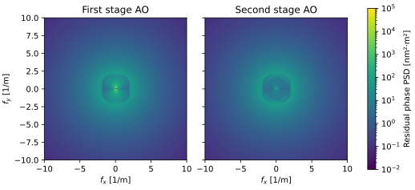

AOPERA¶
Adaptive Optics Psf Estimation and Residuals Analysis
Adaptive optics residuals, in seconds.
A Fourier model of single-conjugate and cascaded AO: from a configuration file to the error budget, the phase PSD and the PSF.
pip install aopera
══════════════════════════════════════════════════
WAVEFRONT ERROR [nm RMS]
—————————————————▾———————▾———————▾———————▾———————▾
temporal 140 |■■■■■■■■■■■■■■■■■■■ |
fitting 73 |■■■■■ |
jitter 65 |■■■■ |
ncpa 50 |■■ |
aliasing 22 | |
chromatic 19 | |
refraction 15 | |
photon 6 | |
ron 0 | |
—————————————————▴———————▴———————▴———————▴———————▴
total 181
══════════════════════════════════════════════════
Strehl = 52.5%Error budget printed by the code below.

Residual PSD after each stage of the cascaded AO tutorial.
A simulation in a few lines
Presets are provided for several instruments, and the same parameters can be set directly from Python.
from aopera.turbulence import Atmosphere
from aopera.otfpsf import Pupil
from aopera.control import RTC
from aopera.ffwfs import PWFS
from aopera.photometry import SourceScience, SourceWFS
from aopera.simulation import simulation
atmo, instru = 'ohp.ini', 'papyrus.ini' # presets of aopera/data/
atm = Atmosphere.from_file(atmo)
tel, rtc = Pupil.from_file(instru), RTC.from_file(instru)
wfs = PWFS.from_file(instru)
src_sci, src_wfs = SourceScience.from_file(instru), SourceWFS.from_file(instru)
result = simulation(512, 3, tel, atm, rtc, wfs, src_sci, src_wfs, verbose=True)
strehl = result.strehl(src_sci.wvl)
print('Strehl = %.1f%%' % (100 * strehl))
What you get
The outputs of one simulation, and what it can model.
Phase PSDIn rad²·m², for each AO error term.
Error budgetThe integral of each PSD, in nm RMS.
PSFLong and short exposure, at any wavelength.
Coronagraphic imageImage behind a perfect coronagraph, and its contrast curve.
Fiber couplingCoupling efficiency.
Fourier filtering WFSPyramid sensitivity and non-linearities with the convolutive formalism.
Cascaded AOThe result of one stage feeds the next one.
LightOnly needs numpy, scipy and astropy.
CompatibleTIPTOP ini files in SCAO mode, and the OOPAO end-to-end tool.
Keep going
InstallationFrom PyPI, or from the repository to contribute.
Your first simulationStep by step, from the presets to the PSF.
Cascaded AOFeed a second AO stage with the first one.
Coronagraphic imageFrom the residual PSD to the contrast curve.
Example galleryThe scripts of the repository, with their figures.
Code documentationFunctions and classes.
ValidationReference paper, tests, and how to check the code.
Romain Fétick, Vincent Chambouleyron, Lisa-Marie Mazzolo, Arnaud Striffling. Reference: Fetick, Chambouleyron, Mazzolo et al, 2026, Astronomy and Astrophysics.